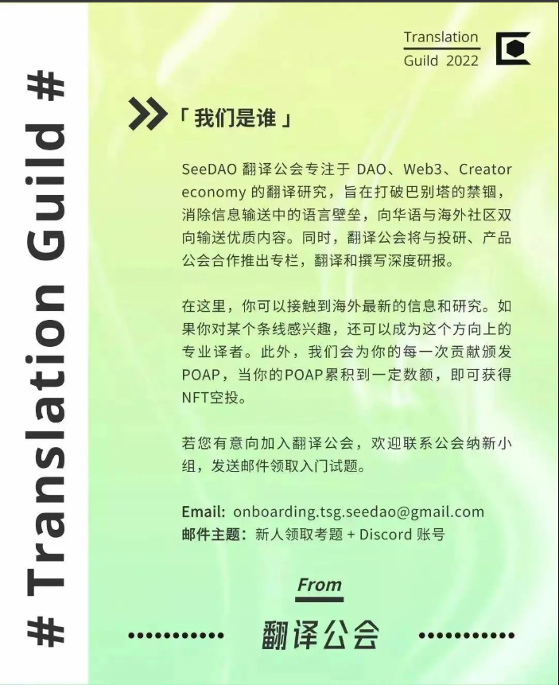

摘要：本文引入系统发展的两种动力理论——分形层次结构和社交网络，指出公司只能利用其中的一种动力，并越来越僵化直至消亡。而 DAO 能像城市一样，利用这两种动力，一方面催生创造力和创新，另一方面使创造和创新规模化。
再见“商业模式”，你好“网络经济”
正如我们在最近的文章《 DAO 不是物件，而是「流」》中所描述的那样，Web3 提供了一种新范式，为取代已经持续发展了400之久的以公司为中心的旧范式提供了可能性。
如果我们能够摆脱这种“把公司视作中心化的实体”的范式，不再将 DAO 视为实体，而将其视为资源协调流动的去中心化网络，那么我们将拥有一种全新的看待商业和经济的视角。
DAO 和公司在本质上是两种不同的系统。公司玩的是商业模式，而 DAO 则是一种网络经济。这种本质上的区别是 DAO 有可能引领新范式的关键所在。
要搞清楚网络经济是什么、它们与商业模式有何不同、为何说它更强大，我们需要借助一些概念框架加以说明。「规模」的概念是我们理解这一点的武器；为了解释规模，我将重点借助 Geffrey West 关于系统扩展动力学的研究。
我们可以在这里看到关于这一动力学的更完整解释，不过，我们需要在更高的层次上理解两个根本动力：
本文首先将向大家介绍这两种动力，如果我概述得还行，那么希望能让大家清晰的了解到，这两个系统是激发 DAO 能量的关键。
「生物系统以亚线性方式扩展」，West 的研究始于对这一观点的理解。这意味着随着生物（哺乳动物、昆虫、树木等）体型的增加，它们内在的系统会变得更加高效。例如，如果一只老鼠的体型变成现在的两倍，它只需要增加 75% 的食物、氧气、水等；因为它的心跳会变慢，因此也会活得更长。从老鼠到大象再到蓝鲸，这一预测一直是准确的；尺寸每增加一倍，效率就相应提高 25% 。产生这种现象的机制，与被称为分形扩展分层的概念有关。
生物系统是一种分形分层结构（有点类似于分支结构），每增加一层都会增加效率。一个很好的例子是哺乳动物的心血管系统。所有的哺乳动物都有一颗心脏，都以相同的方式将血液泵送到我们的身体各处。心脏在压力下将血液泵入主动脉，主动脉又分支成两条分支动脉，然后这些分支动脉又分支成更多动脉，以此类推，越来越多。这个系统有这样一个规律，层数越多，系统的效率就越高（随着你的生长，心脏将含氧血液输送到身体细胞所需的工作量将会下降）。这就是为什么一头 220 吨重的蓝鲸，每分钟只需跳动 11 次，就能将血液循环到身体的每个细胞中。而老鼠要完成同样的事情，心脏每分钟需要跳动 500 次。介于这两者之间的所有哺乳动物，都表现出完全相同的心率与体型比。
虽然这很神奇，但更不可思议的是，这种动力系统也适用于人造系统。这种规模效应是公司运转的基本动力。企业发展的本质，就是建立一套分形分层来形成规模经济，它跟哺乳动物、昆虫和树木生长共享着相同的数学规律。随着公司规模的扩大和层级结构的增加，它的每一层级都获得了更高效率，单位商品的生产成本则随着规模的增加而下降。这被称为次线性扩展，即随着系统规模的增长，资源的利用效率变得越来越高。
分形分层是有限的
依靠分形分层带来规模效应的系统，其扩展效率高得难以置信。但缺点是，这些系统会以可见的方式衰退和消亡。所有动物的寿命几乎都可以通过它们的体型大小得到完美预测（对于哺乳动物的寿命来说，从老鼠的 1-1.5 年，到大象的 60-70 年，再到蓝鲸的 80-90 年，都是可预测的）。体型越大，活得越久——但最终都会死去。
这是因为分形（分层）结构是一种僵化的结构。它们的优势来源于可以形成规模效应的底层结构，但随着时间的推移，这种结构会衰退，它不得不投入越来越多的资源来维持运转。于此同时，由于无法改变其结构上的僵化，它最终无法存活下去。
附带说明一下，人类是唯一能够逆势而上的动物，我们现在的寿命大约是基于体型比的原本寿命的两倍。而这，也不过仅仅发生在过去几百年时间内，归功于医学、卫生、营养等方面的突破。直到 19 世纪，我们的平均寿命还是在 20-40 岁之间，这与我们的体型大小相称。
公司是分形结构的大师
正是这种动力，支撑了「公司」400 年的成功。有限责任公司的建立，让我们有了一个高效的系统，来运作这种动力——分配资金，构建基础设施，扩展商业模式……循环往复。
然而，类似于生物学中的分形分层，公司也是有限的。它们不断扩展着自己的商业模式，但随着时间的推移，将无法继续发展。这种底层结构需要越来越多的资源才能维持，最终走向消亡。
这种消亡往往并不明显，公司会想尽一切办法让自己活下去。比如，进行反竞争行为——收购或并购其他仍在规模化发展的公司，或者它们自己可能被另一家公司收购（即使公司本质上已经消亡了，也会继续保留品牌）。但一份广为流传的分析表明，即便采用了所有这些规避消亡的策略，几乎所有公司最终都以可见的方式走向衰退和消亡。
West 指出的另一个强大动力是社交网络，以及其以超线性方式带来的社交产出。我们在这里所指的社交网络，是纯粹的人与人互动的网络，比如朋友圈，商业关系，宗教社区，会员俱乐部等——任何社会关系的集合。
社交网络的超线性扩展，是基于一组可预测的网络动力，包括梅特卡夫定律。
这就是市场这样的机制的运作方式。市场这个网络的参与者越多，发生有价值的商品和服务交换（作为社交产出的交易）的可能性就越大，网络的价值也就越大。
这意味着，随着社交网络规模的扩大，其社交产出也以越来越高的速度增长。研究表明，如果社交网络的规模扩大一倍，社交产出将会增加一倍以上：确切地说，增加 115%。
这一动力原理适用于所有类型的社交产出，但我们感兴趣的是创意和创新的产生。West 团队的结论很明确：社交网络规模的扩大，将带来创意和创新的超线性增长。这是思想、知识、资本和创造性合作在更大范围内进行交流的直接结果。
公司面临的问题在于，一旦它们发展成熟，就几乎不可能成功借助这种由社交网络驱动的动力系统。他们必须致力于建立可扩展的分层结构，以便抓住规模经济带来的好处，这意味着它们往往会形成一个高度僵化底层架构，使得真正的创新几乎不可能发生。尽管它们也会尝试创新，但创新并不是公司这个组织形式所擅长的。
有些公司确实在做研发以推动产品线扩展等，但这很少能带来真正的创新，大多数公司都会沦为从外部购买其他人生产的创新而不是自己创新。随着层级变得越来越牢固和僵化，它们越发地会这么做，以试图保持正确，防止必然的衰落。
但城市不会消亡
这就是 West 的分析真正有趣的地方。虽然动物、植物和公司的消亡都是可预见的，但纵观历史，几乎没有城市消亡的例子。
事实证明，城市之所以能够一直存活（并蓬勃发展），是因为它们能够利用这两种动力——次线性分层扩展和超线性社交网络驱动创新。
城市一方面利用扩展分层建设道路、电网、供水、医院、紧急服务、通信网络、学校等等。这意味着城市越大，所有这些基础设施的建设效率就越高，越能带来更多的便利设施和更好的生活水准。
另一方面，随着城市的发展，它们也拥有越来越大的社交网络，这催生了越来越多的创造力和创新（以及所有其他社交产出）。如果城市的规模扩大一倍，它产生的研究论文、专利、创业公司等的数量将会多出 115%。
这种动力系统为城市带来了创新和改进的良性循环。城市的创新能力创造了源源不断的新商业，替代那些死去的企业，带来新的资金；收入得到增加，基础设施得到投资和改善，城市焕然一新。这反过来又带来了另一个良性循环——城市居民的生活方式和对未来预期的改善，吸引了新的居民，从而提高了跟基础设施建设有关的动力一的效率，同时也提升了跟创意创新有关的动力二的效率。
那么 DAO 呢？
你可能已经知道这是怎么回事了。作为网络经济体的 DAO，具有同时充分利用动力一和动力二的潜力。毕竟，城市也不是物件……它们是网络！
从根本上讲，公司是关于构建分形扩展结构的组织，它们所做的一切都是围绕这个来进行。斯坦福大学和伯克利大学的创业学教授 Steve Blank，就是通过这种方式来区分初创企业和成熟公司的：
在这个框架中，我们可以看到初创企业的运作方式就像一个社交网络——一群创始人，他们很好地连接在一起，当他们试错、迭代和调整方向时，都具有高度的创造力和创新性，以期能够探索出一个可重复可扩展的商业模式。
接着，当他们找到了可重复可扩展的商业模式后，就会致力于构建和夯实基础架构以规模化这个商业模式。他们将自己的战略和业务部门都定位于实现这个架构。在此之后，再也很难做出改变。
而 DAO 是一种网络经济体，不像公司一样去追逐某个商业模式。作为网络经济体，DAO 更像城市，可以摆脱公司僵化和有限的宿命。同样因为网络经济体的属性，DAO 可以利用上述两种动力；它们可以成为新实验和新发现的引擎，并由围绕一个共同目标的个体而结盟成的社区所领导。它们同时也可以将这些创新规模化，给世界带来福祉。
这完全是可能的，因为网络经济能以更复杂和有效的方式进行协调，而公司做不到。一个 DAO 网络可以包含多个子网络。它不是一个单一的集中控制实体，而是包含很多自治的自组织团体——在这个更加灵活的的组织结构中，所有这些团体都朝着它的总体目标而努力；一些团体为扩展分层而做建设，另一些则为探索和创造而努力。
跟城市一样，借助动力一和动力二，DAO 网络会随着自身的发展从同样的正反馈循环中受益。不断增长的经济规模使它们变得强大，而持续的创造力、创新和响应能力，又使它保持活力，与瞬息万变的世界保持连接。正因为此，它们吸引了越来越多寻求机会做有价值的事情的人才，这些人又支撑并壮大了 DAO 网络。
这就是 web3 对我们的许诺！这就是 DAO 对我们的许诺！它是由被启发的个体组成的网络，可以共同对抗我们根深蒂固的经济系统、数万亿美元市值的在位企业和 400 年历史导致的惯性。
要做到这一点，DAO 必须能够同时利用动力一和动力二。
作者：Rowan Yeoman
翻译：Johnny J
校对: sirs
排版：Bo
审核: Suannai

